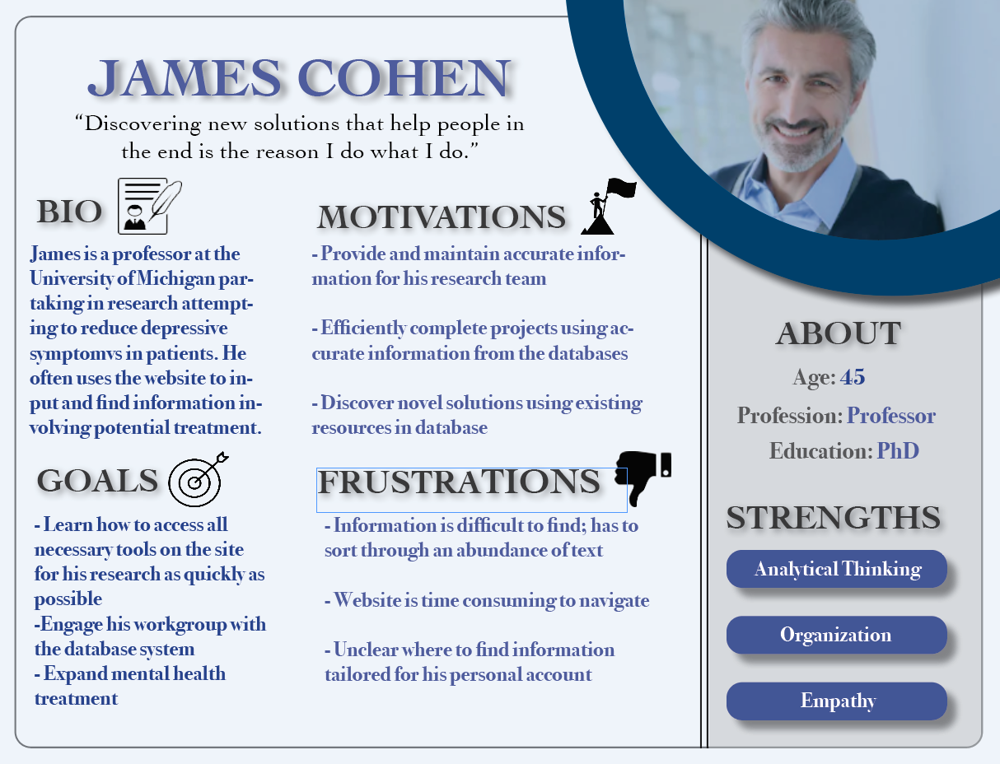
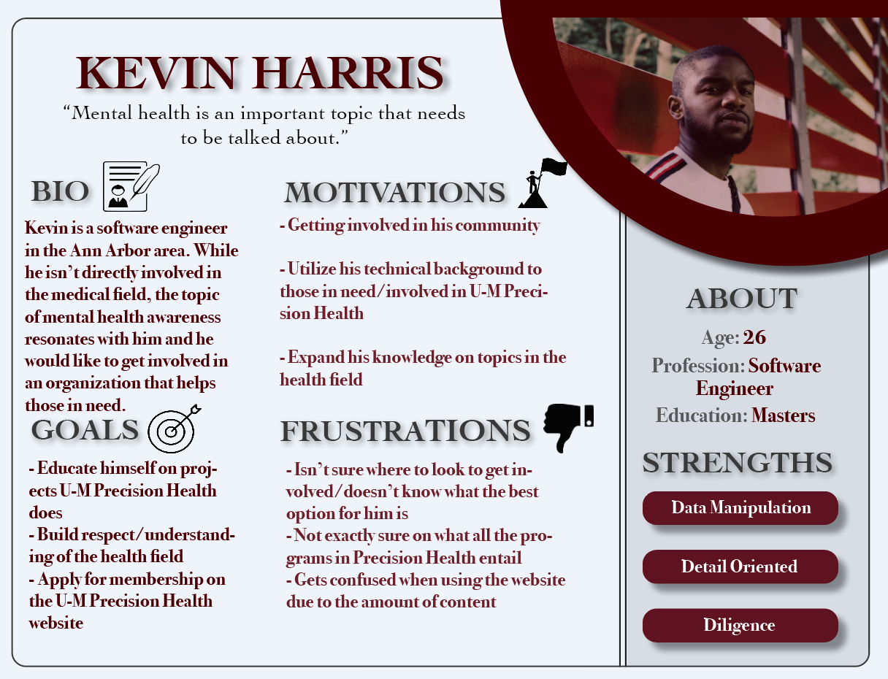

ABIGAIL CHESTER
U-M Precision Health Website Redesign
Throughout my senior year, I have been working with a group to produce three prototypes of a newly designed website for U-M Precision Health.
What We've Done So Far
Met with client several times to establish goals and necessities for the project.
- Problem Statement: The current website has not advanced as the organization has grown. More and more projects have been started, meaning more and more pages have been added to the site. However, the overall site organization has not been updated to allow for a seamless navigation and a minimalistic aesthetic.
External Research Report
- Stakeholder Analysis: Based on our research, we found that the main users of this website include those directly involved with the organization. There are significantly less users who solely visit to browse the site to learn about the organization.
- Competitive Analysis: U-M Precision Health’s main competitors are other precision health organizations at other universities. Important qualities of competitors’ sites include clear navigation, relevant photos/videos, and well organized content.
- Subject Matter Interview: To gain a better understanding of the field of precision health, we reached out to Dr. Colin Halverson, an Assistant Professor and precision health expert at Indiana University. He informed us of the current state and future of the precision health field, the importance of the field, and what he hoped the general public would come to learn about the field in the future.
User Research
- Heuristic Evaluation: We performed a heuristic evaluation and found that the most severe violations according to Nielsen’s heuristics were consistency & standards, aesthetic & minimalist design, and flexibility & efficiency.
- Survey: From our survey, we learned that our users are researchers with notable academic backgrounds. They use the site primarily to find information about projects, grants & scholar’s programs, and news & events.
- Card Sorting: We asked both users and non-users of the site to card sort the existing navigation bar. We found that currently there is an excessive number of tabs and some pages need to be rearranged.
- Personas: Based on our research, we came up with a primary, secondary, and tertiary persona, shown below respectively.
James
Primary Persona

Teresa
Secondary Persona
Kevin
Tertiary Persona

What's to Come
- Lo-Fi Prototypes and Usability Testing
- 3 Hi-Fi Prototypes to Deliver to Client
- A/B Testing of Prototypes